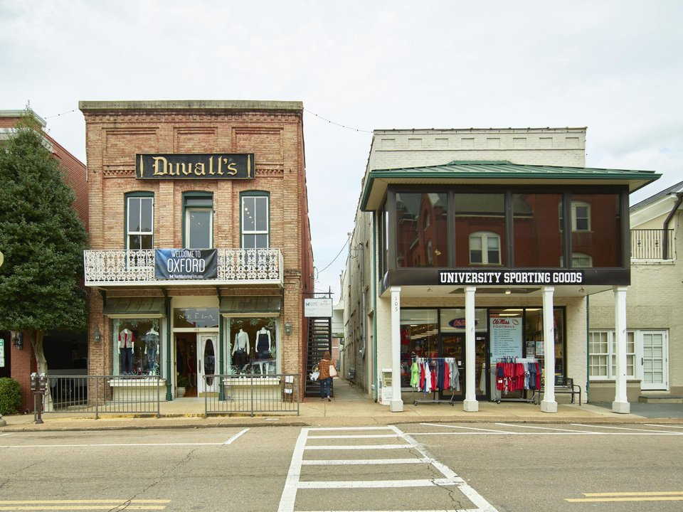

Campus · Classic
The Inn at Ole Miss
The university’s hotel, beside the Grove.
Official details for The Inn at Ole MissFaulkner, a famous bookstore and a celebrated food scene.
Oxford is a small college town with an outsized literary and food reputation. Browse Square Books, walk the shaded trail to William Faulkner’s home at Rowan Oak, catch the Thacker Mountain Radio Hour and dine at City Grocery, where chef John Currence helped put Oxford on the culinary map.

In our plane it’s a short flight.
Where we’re staying Dinner Things to do The plan
I’ll handle the flight planning; you handle the fun planning!
Time illustration: direct distance at 150 KTAS plus 15 minutes for departure and arrival, matching the discovery page. Use ForeFlight for your actual flight plan.
Check the weekend weather at both ends → Flight category, your minimums and the crosswind on the best runway.
More in Aviation & getting around below. Crew cars change often: call the FBO before you go. How to have a rental car waiting at the FBO · Know something we missed? Tell us.
KUOX, University–Oxford Airport, is owned by the University of Mississippi and sits a few minutes from the Square.
University–Oxford Airport, Oxford, MS
Confirm FBO hours, overnight parking and ground transportation before you go. No live fuel price is shown.
Ole Miss home football weekends bring heavy traffic and booked-out hotels; check the schedule. About 530 nm from Myrtle Beach: plan a fuel stop or a long nonstop leg.
Rates and availability need travel dates. Avoid home football and graduation weekends unless that is the point.
The university’s hotel, beside the Grove.
Official details for The Inn at Ole MissA playful, literary-themed hotel with a rooftop bar.
Official details for Graduate OxfordA boutique hotel just off the Square, formerly the Chancellor’s House, with a rooftop bar.
Official details for The Oliver HotelPrices and availability for your dates, through our partner Stay22. This is an affiliate link: we may earn a commission at no cost to you. The picks above are never paid.
Reserve weekend dinners.
Chef John Currence’s flagship, with a lively upstairs bar.
Official details for City GroceryA North Mississippi brasserie with an oyster bar.
Official details for SnackbarWood-fired pizza and handmade pasta.
Official details for Saint LeoModern Southern cooking in a restored house.
Official details for Lenora’sA slow weekend of walking, reading and eating.
This prototype links to the local visitor site. It does not yet match events to your travel dates.
Music, art and food around the Square.
Festival for Double Decker Arts FestivalTailgating in the Grove is a tradition; book far ahead or choose another weekend.
Schedule for Football SaturdaysReadings and talks with authors.
Conference for Oxford Conference for the BookCheck the local calendar when choosing a weekend, and confirm dates and tickets with the organizer.
A sample weekend: books, Faulkner and dinner. No bookings or availability confirmed.
Land at KUOX mid-morning.
Lunch on the Square and Square Books.
Rowan Oak, then back to the FBO.
Land at KUOX, subject to weather and your actual flight plan.
Square Books and a walk around the Square.
Dinner at City Grocery.
The University Museum, then Bailey’s Woods to Rowan Oak.
Walk the campus and the Grove.
Oysters at Snackbar.
A slow brunch near the Square.
Allow time at the FBO.
Summer storms build in the afternoon; leave early.
The University Museum and Bailey’s Woods.
Walk the campus and the Grove.
Thacker Mountain Radio, if it’s on.
These details make the difference between an appealing list and a usable getaway.
Lodging first, then dinners.
Football, graduation and big festival weekends fill every hotel.
About 530 nm. Plan a fuel stop or a long nonstop leg.
Spring and fall.
Picks and links reviewed by WingAway Weekends. Hours, prices, menus and availability change often, so confirm directly with each place before booking. Spotted something out of date, or have a favorite we missed? Email us at hello@wingawayweekends.com.
WingAway Weekends helps you discover the destination. Use ForeFlight and current official aviation information for route, performance, weather, NOTAMs and preflight decisions. Flight planning and PIC responsibility stay with the pilot.
One fly-in weekend, a Fly to Lunch pick and the newest guides, about once a month.
Free. Unsubscribe anytime.